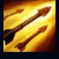
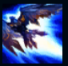
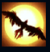
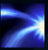

Quinn
| Quinn Demacia Wing's | |
|---|---|
| Release date | 01.03.2013 |
| Class | Marksman,Assassin |
| Positions | Top |
| Resource | Mana |
| Range type | Ranged |
| Adaptive type | Physical |
| Base statistics | |||
| Health | 533-1978 | Mana | 268-863.8 |
| Health regen. | 5.5-14.85 |
Mana regen. | 6.972-13.77 |
| Armor | 28-87.5 | Attack damage | 59-99.8 |
| Magic resist. | 30-38.5 | Crit. damage | 175% |
| Move. speed | 335 | Attack range | 525 |
Quinn este un cavaler-cercetaș de elită din Demacia, care face incursiuni adânci în teritoriul inamic. Tânăra are o legătură extraordinară cu Valor, vulturul ei legendar; mulți adversari au pierit înainte să-și dea seama că se luptă nu cu unul, ci cu doi dintre cei mai măreți eroi ai regatului. Agilă și sprintenă la nevoie, Quinn țintește cu arbaleta, iar Valor însemnează din înalturi țintele înșelătoare. Cei doi formează una din cele mai letale echipe de pe câmpul de luptă |  |
VANATOARE Valor, vulturul demacian al lui Quinn, însemnează periodic inamicii ca fiind ''vulnerabili''. Primul atac de bază al lui Quinn împotriva țintelor ''vulnerabile'' va provoca daune fizice bonus. |
||
|---|---|---|---|---|
 |
ATAC ORBITOR Quinn îl cheamă pe Valor, care însemnează un inamic și-i reduce raza de viziune, iar apoi le provoacă daune tuturor inamicilor din zonă |
|||
 |
SIMTURI ASCUTIE Quinn primește în mod pasiv viteză de atac și viteză de mișcare după ce atacă o țintă ''vulnerabilă''. La activare, Valor dezvăluie o zonă întinsă din apropiere. |
|||
|  |
BOLTA Quinn se năpustește asupra unui inamic, provocându-i daune fizice și scăzându-i viteza de mișcare. Când ajunge la țintă, se aruncă asupra ei, întrerupând-o pentru scurt timp, după care sare înapoi la o distanță aproape egală cu raza maximă de atac. |